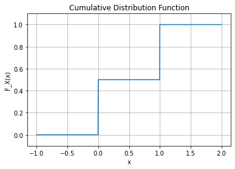
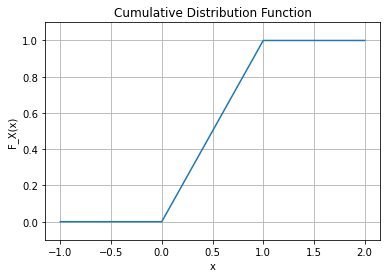
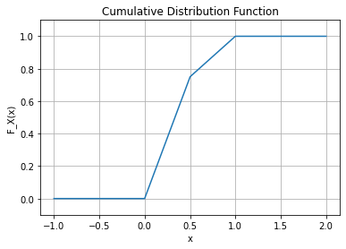
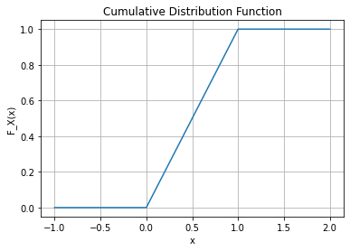
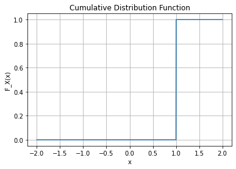

import numpy as np
import matplotlib.pyplot as plt13wk: 밀도함수
2023-05-30
Import
강의영상
youtube: https://youtube.com/playlist?list=PLQqh36zP38-xzs1sJhhsXTzssLICsc9t6
칸토어집합
ref: https://en.wikipedia.org/wiki/Cantor_set
정의
- 아래의 집합열 \(C_n\)의 극한 \({\cal C}=\lim_{n\to\infty} C_n\)를 생각하자.
실제수열
- \(C_0=[0,1]\)
- \(C_1=[0,\frac{1}{3}] \cup [\frac{2}{3},1]\)
- \(C_2=\big([0,\frac{1}{9}]\cup[\frac{2}{9},\frac{1}{3}] \big) \cup \big([\frac{2}{3},\frac{7}{9}]\cup [\frac{8}{9},1] \big)\)
- \(\dots\)
언어버전: created by iteratively deleting the open middle third from a set of line segments.
- \(C_0\): \([0,1]\)
- \(C_1\): \(C_0\)에서 정의된 line을 3등분한뒤 가운데를 제거
- \(C_2\): \(C_1\)에서 정의된 line segments를 각각 3등분한뒤 각각 가운데를 제거
- \(\dots\)
수식버전
- \(C_0=[0,1]\)
- \(C_1=\frac{C_{0}}{3}\cup(\frac{2}{3}+\frac{C_{0}}{3})\)
- \(C_2=\frac{C_{1}}{3}\cup(\frac{2}{3}+\frac{C_{1}}{3})\)
- \(\dots\)
- \(C_n=\frac{C_{n-1}}{3}\cup(\frac{2}{3}+\frac{C_{n-1}}{3})\)
단, 여기에서
- \(\frac{1}{3}[a,b]= [\frac{a}{3},\frac{b}{3}]\)
- \(\frac{2}{3}+[a,b]= [\frac{2}{3}+a,\frac{2}{3}+b]\)
와 같이 정의한다.
그림버전

성질
- 3진법의 표기: 칸토어 집합의 원소는 \([0,1]\)사이의 원소를 삼진법으로 표현할때 모든 자리수가 0 또는 2가 되는 수만 모은 집합이다.
- \([0,1]\) 사이의 모든 실수를 3진법을 표현한다고 생각하자.
- \(C_1\)은 \(0.1xxxx\dots_{3}\)와 같은 숫자가 빠지고, \(C_2\)에서는 \(0.01xxx\dots_{3}\) 혹은 \(0.21xxx\dots_{3}\) 에 대응하는 숫자가 빠지는 과정이 반복적으로 일어난다고 볼 수 있다.
- 2의 결과를 잘 생각하면 칸토어 집합에 포함되는 수는 삼전법 소수로 표기했을 때 모든 자리수가 0 또는 2가 된다는 점을 쉽게 눈치챌 수 있다.
- 카디널리티: 칸토어 집합의 카디널리티는 구간 \([0,1]\)의 카디널리티와 같다. 즉 \(2^{\aleph_0}\) 이다.
- \(y\in [0,1]\) 사이의 모든 실수는 임의의 2진수로 표현할 수 있다.
- 예를들어 \(y=\frac{3}{5}=0.100110011001..._{2}\)와 같이 표현할 수 있다.
- 만약에 2의 결과에서 \(1\)을 모두 \(2\)로 바꾸어 3진법수를 만들면 \(0.200220022002..._{3}=\frac{7}{10}\)와 같이 쓸 수 있는데, 이는 칸토르 집합의 원소가 된다.
- 3을 2의 출력으로 바꾸는 과정을 수행하는 함수 \(f\)를 정의하자. 즉 이 예제의 경우 \(f(\frac{7}{10})=\frac{3}{5}\).
- \(f\)는 전사함수이므로 \({\sf card}([0,1]) \leq {\sf card}({\cal C})\).
- 잴 수 있는 집합: \({\cal C} \in {\cal R}\)
- \(C_0,C_1,C_2\dots \in {\cal R}\)
- \({\cal C} = \lim_{n\to \infty} C_n = \cap_{n=0}^{\infty} C_n\) (\(C_0,C_1,C_2,\dots\) 이 감소하는 집합열임을 이용)
- 시그마필드 \({\cal R}\)은 countable intersection에 닫혀있으므로 \({\cal C} \in {\cal R}\)
- 르벡측도값(길이): \(\lambda({\cal C})=0\)이다. 여기에서 \(\lambda\)은 르벡측도이다. 즉 칸토어집합의 길이는 0이다.
- 칸토어 집합을 만드는 과정에서 제외되는 집합의 길이는 순서대로 \(\frac{1}{3}, \frac{2}{9}, \frac{4}{27} \dots\) 이다.
- 이것은 첫째항이 \(\frac{1}{3}\)이고 공비가 \(\frac{2}{3}\)인 등비수열이므로 무한등비급수의 합을 이용하면 제외되는 길이의 합은 \(1\)이 됨을 계산할 수 있다.
- 굉장히 오래전에 만들었던 표
| 집합 | 카디널리티 | 분류 | 르벡메져 |
|---|---|---|---|
| \(\{1,2,3\}\) | 3 | 가산집합 | 0 |
| \(\mathbb{N}\) | \(\aleph_0\) | 가산집합 | 0 |
| \(\mathbb{Z}\) | \(\aleph_0\) | 가산집합 | 0 |
| \(\mathbb{Q}\) | \(\aleph_0\) | 가산집합 | 0 |
| \([0,1]\) | \(2^{\aleph_0}\) | 비가산집합 | 1 |
| \([0,1]\cap \mathbb{Q}\) | \(\aleph_0\) | 가산집합 | 0 |
| \([0,1]\cup \mathbb{Q}\) | \(2^{\aleph_0}\) | 비가산집합 | 1 |
| \([0,1]\cap \mathbb{Q}^c\) | \(2^{\aleph_0}\) | 비가산집합 | 1 |
| \([0,\infty)\) | \(2^{\aleph_0}\) | 비가산집합 | \(\infty\) |
| 비탈리집합 | \(2^{\aleph_0}\) | 비가산집합 | NA |
| 칸토어집합 | \(2^{\aleph_0}\) | 비가산집합 | 0 |
강의설명 오류 정정
이부분의 설명에서 제가 “가산집합이면 대부분 르벡메져가 0이다” 라는 식으로 설명했는데요, 이는 잘못된 설명입니다. 대부분의 가산집합이 르벡메져가 0이 아니고 “모든 가산집합은 무조건 르벡메져가 0입니다.” 왜냐하면 임의의 가산집합 \(A\)는 아래와 같이 한점의 집합의 countable union으로
\[A = \cup_{i=1}^{\infty} \{a_i\}\]
으로 표현가능한데요, 여기에 르벡메져를 취하면
\[\lambda(A) = \lambda\big(\cup_{i=1}^{\infty} \{a_i\}\big)=\sum_{i=1}^{\infty}\lambda( \{a_i\})=0\]
와 같이 됩니다. 두번째 등호는 메져의 정의 (\(\sigma\)-additivity) 에 의하여 성립합니다. 강의오류에 발견에 도움을 준 김보람학생 감사합니다.
밀도함수 (density function)
정의
- (정의) \(X\)를 확률공간 \((\Omega, {\cal F}, P)\)에서 정의된 확률변수라고 하고 \(F_X\)를 \(X\)의 분포함수 라고 하자. 만약에 \(F_X\)가 아래와 같은 방식으로 표현된다면 \(f_X\)를 \(X\)를 밀도함수 (density function) 이라고 한다.
\[F_X(x)=\int_{-\infty}^xf_X(y)dy\]
- 저런 표현이 존재하지 않는다면 어쩌지?
- \(F_X(x)\)가 불연속인 경우: 미분 불가능
- \(F_X(x)\)가 연속인 경우: 미분가능할 수도 있고, 아닐 수도 있고
다양한 밀도함수 예시
- 교양: 함수 \(F_X(x)\)가 연속인 경우는 연속확률변수 \(X\)의 분포함수 (distribution fucntion) 혹은 CDF라고 하고 함수 \(F_X(x)\)가 jump만 존재하는 불연속인 경우는 이산확률변수의 분포함수 (distribution function) 혹은 CDF라고 한다.
(예제1) – 균등분포
아래와 같은 distribution function \(F_X\)을 가지는 확률변수 \(X\)를 고려하자.
\[F_X(x) = \begin{cases} 0 & x<0\\ x & 0\leq x \leq 1 \\ 1 & 1<x\end{cases}\]
이러한 함수 \(F_X\)의 density가 존재하는가?
체크: 일단 \(F_x(x)\)는 (1) 비감소하며 (2) \(\lim_{x\to -\infty}F_X(x) = F_X(0) = 0\), \(\lim_{x\to \infty}F_X(x) = F_X(1) = 1\) (3) 오른쪽연속 (그냥 연속임) 이므로 분포함수의 정의를 만족한다. 따라서 \(F_X(x)\)에 대응하는 확률변수 \(X\)가 있다.
(해설)
- 대충 생각하면 (진짜 말 그대로 대충) 아래와 같이 생각할 수 있다.
\[f_X(x) = \frac{d}{dx}F_x(x)\]
- 즉 \(f_X(x)\)는 \(F_x(x)\)의 도함수 같은 것으로 생각할 수 있다.
- 문제는 \(F_X(x)\)는 연속이지만 \(x=0\)과 \(x=1\)에서 미분가능하지는 않다는 점이다.
- 그래서 \(F_X(x)\)는 미분가능하지 않다.
- 하지만 미분가능의 개념을 “함수”에 적용하는 것이 아니라 “하나의 포인트”에 적용한다면 어떨까?
- \(F_X(x)\)는 \(x=0\)과 \(x=1\)을 제외한 모든 점에서 미분가능하며 그 도함수는 대략적으로 아래와 같이 표현할 수 있다.
\[f_X(x) = \begin{cases} 0 & x<0 \\ ?? & x=0 \\ 1 & 0<x<1 \\ ?? & x=1 \\ 0 & 1<x \end{cases}\]
- 어차피 유한개의 점을 제외하여도 적분값에 영향이 없으므로 ??의 값은 아무값이나 넣어도 상관없다. 편의상 아래와 같은 \(f_X(x)\)를 고려하자.
\[f_X(x) = \begin{cases} 1 & 0\leq x \leq 1 \\ 0 & o.w. \end{cases}\]
- 위와 같은 \(f_X(x)\)에 대하여 아래식이 성립한다고 볼 수 있다. \[F_X(x) = \int_{-\infty}^x f_X(y)dy\]
\(F_X(x)\)는 미분불가능하지만 또 어떠한 의미에서는 가능하다고 볼 수 도 있다.


그림2: 위키에서 긁어온 균등분포의 pdf, cdf 그림. 실제로는 \(x=0,1\)에서 \(F_X'(x)\)의 값이 존재하지 않으나 편의상 정의함.
(예제1의 정답에 대한 의문)
만약에 누군가가 아래와 같은 \(f_X(x)\)들이 pdf라고 주장한다면?
- \(f_X(x) = \begin{cases} 1 & 0< x <1 \\ 0 & o.w. \end{cases}\)
- \(f_X(x) = \begin{cases} 1 & 0\leq x < 1 \\ 0 & o.w. \end{cases}\)
- \(f_X(x) = \begin{cases} 1 & 0< x \leq 1 \\ 0 & o.w. \end{cases}\)
별로 상관없을듯 하다. 어차피 \(\lambda(\{0\})=\lambda(\{1\})=0\) 이므로 넓이에 영향이 없다. 위의 함수는 \(x=0,1\)을 제외한 모든곳에서는 함수값이 일치하므로 거의 같다고 보아도 무방하다. 즉 아래의 함수들은 거의 모든 곳에서 같다.
- \(f_X(x) = \begin{cases} 1 & 0< x <1 \\ 0 & o.w. \end{cases}\)
- \(f_X(x) = \begin{cases} 1 & 0\leq x < 1 \\ 0 & o.w. \end{cases}\)
- \(f_X(x) = \begin{cases} 1 & 0< x \leq 1 \\ 0 & o.w. \end{cases}\)
- \(f_X(x) = \begin{cases} 1 & 0\leq x \leq 1 \\ 0 & o.w. \end{cases}\)
여기에서 두 함수 \(f\), \(g\)가 거의 모든 곳에서 같다라는 표현은
\[\lambda\big(\{x: f(x) \neq g(x)\}\big)=0\]
을 의미한다. 즉 함수값이 다른 집합의 르벡측도값이 0이라는 의미이다.
(예제2) – 혼합된 균등분포
아래와 같은 distribution function \(F_X\)을 가지는 확률변수 \(X\)를 고려하자.
\[F_X(x) = \begin{cases} 0 & x<0\\ \frac{3}{2}x & 0\leq x < \frac{1}{2} \\ \frac{1}{2}+\frac{1}{2}x & \frac{1}{2}\leq x<1 \\ 1 & 1\leq x\end{cases}\]
이러한 함수 \(F_X\)의 density가 존재하는가?
체크: 일단 \(F_x(x)\)는 (1) 비감소하며 (2) \(\lim_{x\to -\infty}F_X(x) = F_X(0) = 0\), \(\lim_{x\to \infty}F_X(x) = F_X(1) = 1\) (3) 오른쪽연속 (그냥 연속임) 이므로 분포함수의 정의를 만족한다. 따라서 \(F_X(x)\)에 대응하는 확률변수 \(X\)가 있다.
(해설)
함수 \(F_X(x)\)는 \(x=0,\frac{1}{2},1\) 에서 미분불가능하지만 어차피 미분불가능한 점이 countable 하므로 여기에서는 무시하고 \(f_X(x)\) 값을 편의상 정의하여도 무방하다. 따라서 아래와 같은 함수 \(f_X(x)\)가 pdf가 될 수 있다.
\[f_X(x) = \begin{cases} \frac{3}{2} & 0 \leq x <\frac{1}{2} \\ \frac{1}{2} & \frac{1}{2}< x < 1 \end{cases}\]
그 외에도 \(x=0,\frac{1}{2}, 1\)에서의 함수값을 어떻게 정의하느냐에 따라서 여러개의 정답이 있을 수 있지만, 그러한 함수들은 \(f_X(x)\)와 거의 모든 곳에서 같은 함수이다.
여기서도 \(F_X(x)\)는 미분불가능하지만 또 어떠한 의미에서는 가능하다고 볼 수 도 있다.
- 주장: \(F_X(x)\)가 모든 곳에서 연속 이고 거의 모든 곳에서 미분가능하다고 가능하면 아래를 만족하는 (도함수 비스무리한) \(f_X(x)\)가 존재한다.
\[F_X(x) = \int_{-\infty}^{x} f_X(x) dx\]
이때 \(F_X(x)\)가 미분가능하지 않은 집합에 대하여서는 적분을 정의함에 있어서 제외하고 정의해도 무방하다.
엄청 그럴듯해보이지만 칸토어함수의 존재로 인하여 이 주장은 틀렸다.
칸토어함수, 칸토어분포
- 아래와 같은 과정으로 얻어지는 함수 \(F_0, F_1, F_2, \dots\)를 고려하자.

그림에서는 \(f_0, f_1, f_2\) 와 같이 표현하였지만 우리는 편의상 \(F_0, F_1, F_2\)와 같이 표현하도록 하겠다.
- 이제 이러한 함수의 극한을 \(F\)라고 하자. 즉
\[F(x) = \lim_{n\to \infty} F_n(x)\]
이다. 이것을 기호로 간단하기 \(F_n \to F\) 와 같이 표현하기도 한다. 여기에서 \(F_n \to F\)의 의미는 \(F_n\)의 임의의 고정된 점 \(x^\star\)에 대하여 \(F_n(x^\star) \to F(x^\star)\)라는 의미이다.
- 함수 \(F_n\)의 정의역을 칸토르 집합 \({\cal C}\)와 연계하여 이해하면 아래와 같은 사실을 관찰할 수 있다.
- \(F_0\)은 \(C_0\)에서는 양의 기울기를 가지고 \([0,1]-C_0\) 에서는 기울기가 0이다.
- \(F_1\)은 \(C_1\)에서는 양의 기울기를 가지고 \([0,1]-C_1\) 에서는 기울기가 0이다.
- \(F_2\)은 \(C_2\)에서는 양의 기울기를 가지고 \([0,1]-C_2\) 에서는 기울기가 0이다.
따라서 아래의 사실을 유추할 수 있다.
- \(F\)는 \({\cal C}\)에서는 양의 기울기를 가지고 \([0,1]-{\cal C}\) 에서는 기울기가 0이다.
- 함수 \(F\)를 칸토어 함수라고 부른다. 칸토어함수는 아래와 같은 특징이 있다.
- 칸토어 함수는 모든 곳에서 연속이다.
- 칸토어 집합의 외부 \([0,1]-{\cal C}\)에서는 상수함수이다. 즉 칸토어집합의 외부에서는 기울기가 0이다. \(m({\cal C})=0\) 이므로 이 함수는 거의 모든 곳에서 기울기가 0이다.
- \(F\)는 비감소함수이다.
- \(F(0)=0\) 이고 \(F(1)=1\)이다.
- 1,3,4에 의하여 \(F\)는 분포함수의 정의를 만족한다. 1에 의하여 \(F\)는 연속형확률변수의 분포함수가 된다. 칸토어 집합의 외부에서 (그러니까 [0,1]의 거의 모든 점에서) 도함수는 \(0\) 이므로
\[\frac{d}{dx}F(x)=f(x)=0,\quad \sf{a.e.}\]
이다. 하지만 \(f(x)\)는 pdf의 정의를 만족하지 않는다.
- 요약
- 칸토어함수 \(F\)는 분포함수의 정의를 만족한다. 따라서 \(F\)에 대응하는 확률변수 \(X\)가 반드시 있다.
- 심지어 칸토어함수는 연속함수이므로, \(F\)에 대응하는 확률변수 \(X\)는 연속형 확률변수가 된다.
- \(F\)는 거의 모든 점에서 도함수가 존재하지만 그 도함수의 적분이 아니다.
- 그래서 \(X\)의 pdf는 존재하지 않는다.
칸토어함수는 미적분학의 기본정리 성립하지 않는 반례를 찾기 위해 고안되었다. 즉 어떠한 함수 \(F\)가 거의 모든 곳에서 미분가능하며, 그 도함수를 \(f\)가 르벡적분 가능 할지라도 \(\int_{-\infty}^{x} f(y) dy= F(x)\) 가 성립하지 않을 수 있다.
절대연속
- 모티브
- \(F_X\)의 “도함수 비슷한 함수”를 일반화 할 수 없을까? \(\Rightarrow\) 라돈니코딤 도함수
- \(F_X\)의 1과 같이 도함수 비슷한 함수가 언제 존재하는지 조건을 알 수 있을까? \(\Rightarrow\) 절대연속
| 함수 | 도함수 | 라돈니코딤 도함수 |
|---|---|---|
| 연속 | X | X1 |
| 절대연속 | X | O |
| 미분가능 | O | O |
암기: 절대연속은 연속보다 강하고, 미분가능보다 약한 조건이다.
- 정의: 함수 \(F_X(x)\)가 분포함수의 정의를 만족한다고 가정하자.2 \(F_X(x)\)에 대응하는 분포 \(\mu_X:{\cal R} \to [0,1]\)를 생각하자. \(F_X(x)\)가 절대연속이라는 뜻은 아래가 성립한다는 의미이다.
\[\forall B \in {\cal R}: \lambda(B) =0 \Rightarrow \mu_X(B)=0\]
이럴 경우 아래와 같이 표현한다.
- A measure \(\mu_X\) is abosolutely continous with respect to Lebesgue measure \(\lambda\)
- \(\mu_X << \lambda\)
서연 필기
\(\mu_X((-\infty, x]) = F_X(x)\)
\((a,b] = (-\infty,b] - (-\infty,a] = F_X(b) - F_x(a)\)
\(\mu_X([a,b]) = F_X(b) - F_X(a)\)
\(\lambda(B)\) = 구간 \(B\)의 길이
\(\mu(B)\) = 구간 \(B\)에 \(F_X\)의 차이
\(\therefore \lambda(B) =0 \Rightarrow \mu_X(B)=0\)의 의미는 구간 \(B\) 길이가 작아질수록 \(F_X\)의 차이 차이도 작아야 한다는 의미
\(\to\) 위의 정의로 \(F_X\)가 절대 연속이다고 말할 수 있다.
- 정의: 좀 더 일반적으로는 아래와 같이 정의할 수 있다. (Durrett 2019, p 470)
가측공간 \((\mathbb{R},{\cal R})\)를 고려하고 \(\mu\), \(\lambda\)를 \((\mathbb{R},{\cal R})\)에서의 메져라고 하자. \(\mu\)가 absolutely continuous w.r.t. \(\lambda\) 라는 의미는
\[\forall B \in {\cal R}:~ \lambda(B) =0 \Rightarrow \mu(B)=0\]
라는 의미이며 기호로는 \(\mu << \lambda\) 와 같이 나타낸다.
여기에서 공간 \((\mathbb{R},{\cal R})\) 은 이해를 돕기위해서 제한한 것이며, 대부분 교재에서는 좀 더 일반적인 가측공간에서 절대연속을 정의한다.
서연 필기
\(\to\) 위의 정의로 \(\mu\)는 \(\lambda\)에 대하여 \((\mathbb{R},{\cal R})\)에서 절대연속이다고 말할 수 있다.
또는 일반적인 measurable space \((\mathbb{S},{\cal S})\)에서도 절대연속이라고 할 수 있다.
- 절대연속의 예제를 살펴보기전에 필요한 예비학습
이런게 있었거든요.. // 7주차 강의노트
함수 \(\mu\)가 잴 수 있는 공간 \((\Omega, {\cal F})\)에서 정의된 메져라고 하자.
- \(A_i \uparrow A\) \(\Rightarrow\) \(\mu(\lim_{n\to \infty}A_n) = \lim_{n \to \infty}\mu(A_n)\)
- \(A_i \downarrow A\) with \(\mu(A_1)<\infty\) \(\Rightarrow\) \(\mu(\lim_{n\to \infty}A_n) = \lim_{n \to \infty}\mu(A_n)\)
- 감소하거나 증가하는 집합열에서는 \(\lim\)을 넣거나 뺼 수 있다. (정확하지 않은 state, 그냥 기억을 위한 문장)
서연 필기
- \(A_i \uparrow A\) \(\Rightarrow\) \(\mu(\lim_{n\to \infty}A_n) = \lim_{n \to \infty}\mu(A_n)\) 에 대한 설명
\(A_i \uparrow A\) = \(A_1 \subset A_2 \subset A_3 \subset \dots , A_i \in \cal{F}\) & \(\cup^\infty_{i=1}A_i = A\)
이때, \(A\)가 증가하는 집합열이라면
\(A_i \uparrow A\) = \(A_1 \subset A_2 \subset A_3 \subset \dots , A_i \in \cal{F}\) & \(lim_{n \to \infty}A_n = A\)
라 쓸 수 있다.
\(\mu(\lim_{n\to \infty}A_n) = \lim_{n \to \infty}\mu(A_n)\)
\(\to\) \(A_n\)이 증가하는 집합열이므로 \(lim_{n \to \infty}A_n = \cup^\infty_{i=1}A_i\)이라고 쓸 수 있다.
\(\mu(\lim_{n\to \infty}A_n) = \lim_{n \to \infty}\mu(A_n) = \mu(\uplus_{n=1}^{\infty} B_n)\)
\(\to\) \(A_1,A_2, \dots \in \cal{F}\)이고 \(\cal{F}\)는 차집합에 반쯤 닫혀 있어서 disjoint화 가능하다.
\(\mu(\lim_{n\to \infty}A_n) = \lim_{n \to \infty}\mu(A_n) = \mu(\uplus_{n=1}^{\infty} B_n) = \sum^\infty_{n=1} \mu(B_n)\)
\(\to\) msr의 정의인 \(\sigma-add\)에 의해 가능하다.
\(\mu(\lim_{n\to \infty}A_n) = \lim_{n \to \infty}\mu(A_n) = \mu(\uplus_{n=1}^{\infty} B_n) = \sum^\infty_{n=1} \mu(B_n) = lim_{b \to \infty} \sum^n_{k=1} \mu(B_k) = lim_{n \to \infty} \mu(\uplus^n_{k=1} B_k)\)
\(\to\) msr \(\sigma-add\)에 의해 가능하다.
\(\mu(\lim_{n\to \infty}A_n) = \lim_{n \to \infty}\mu(A_n) = \mu(\uplus_{n=1}^{\infty} B_n) = \sum^\infty_{n=1} \mu(B_n) = lim_{b \to \infty} \sum^n_{k=1} \mu(B_k) = lim_{n \to \infty} \mu(\uplus^n_{k=1} B_k) = lim_{n \to \infty} \mu (\uplus^{n}_{k=1} A_k)\)
\(\to\) \(A_1,A_2, \dots \in \cal{F}\)이고 \(\cal{F}\)는 차집합에 반쯤 닫혀 있어서 disjoint화 가능하다.
\(\mu(\lim_{n\to \infty}A_n) = \lim_{n \to \infty}\mu(A_n) = \mu(\uplus_{n=1}^{\infty} B_n) = \sum^\infty_{n=1} \mu(B_n) = lim_{b \to \infty} \sum^n_{k=1} \mu(B_k) = lim_{n \to \infty} \mu(\uplus^n_{k=1} B_k) = lim_{n \to \infty} \mu (\uplus^{n}_{k=1} A_k) = lim_{n \to \infty} \mu (A_n)\)
\(\to\) \(A_1,A_2, \dots\)가 증가하는 집합열이기 때문에 가능하다.
- \(A_i \downarrow A\) with \(\mu(A_1)<\infty\) \(\Rightarrow\) \(\mu(\lim_{n\to \infty}A_n) = \lim_{n \to \infty}\mu(A_n)\)에 대한 설명
\(A_i \downarrow A\) = \(A_1 \supset A_2 \supset \dots, A_i \in \cal{F}\) & \(\cap^\infty_{n=1} A_n = A\)
이때, \(A\)가 감소하는 집합열이라면
\(A_i \downarrow A\) = \(A_1 \supset A_2 \supset \dots, A_i \in \cal{F}\) & \(lim_{n \to \infty} A_n = A\)
\(A_1 \supset A_2 \supset \dots, A_i \in \cal{F}\) & \(\cap^\infty_{n=1} A_n = A\)
증가하는 집합열에 대해 증명했으니 같은 방법으로 보이기 위해 증가하는 집합열로 바꿔준다.
\(A_1 - A_1 \supset A_1 - A_2 \supset A_1 - A_3 \dots A_1 - A_i \in \cal{F}\) & \(\cap^\infty_{n=1} (A_1 - A_n) = A_1 - A\)
\(LHS\) \(\mu(lim_{n \to \infty} (A_1 - A_n)) = lim_{n \to \infty} \mu((A_1 - A_n)\) \(RHS\)
\(LHS\) \(\mu(A_1 - lim_{n \to \infty} A_n) = \mu(A_1 - lim_{n \to \infty} A_n)\)
\(\to\) \(lim_{n \to \infty} A_n = A\) 이 성립하기 때문이고, 이게 성립하는 이유는 감소하는 집합열이기 때문에 \(\cap^\infty_{n=1} A_n = A\)라 쓸 수 있어서이다.
\(LHS\) \(\mu(A_1 - lim_{n \to \infty} A_n) = \mu(A_1 - lim_{n \to \infty} A_n) = \mu(A_1) - \mu(lim_{n \to \infty} A_n)\)
\(\to\) \(A_1 \supset A\) 이라서, 포함관계에 있는 차집합은 msr에서 뺀 것과 같다.
\(RHS\) \(lim_{n \to \infty} \mu((A_1 - A_n) = lim_{n \to \infty} \{ \mu(A_1) - \mu(A_n)\}\)
\(\to\) \(A_1 \supset A\) 이라서, 포함관계에 있는 차집합은 msr에서 뺀 것과 같다.
\(RHS\) \(lim_{n \to \infty} \mu((A_1 - A_n) = lim_{n \to \infty} \{ \mu(A_1) - \mu(A_n)\} = \mu(A_1 ) - lim_{n \to \infty} \mu(A_n)\)
\(\therefore\) \(LHS\) \(\mu(A_1) - \mu(lim_{n \to \infty} A_n = \mu(A_1 ) - lim_{n \to \infty} \mu(A_n)\) \(RHS\)
\(\mu(lim_{n \to \infty} A_n) = lim_{n \to \infty} \mu(A_n)\)
단, \(\mu(A_1)\)가 \(\infty\)보다 작아야 가능하다. 따라서 \(\mu(A_1)\)가 \(\infty\)보다 작다.
- \(A_i \downarrow A\) with \(\mu(A_1)<\infty\) \(\Rightarrow\) \(\mu(\lim_{n\to \infty}A_n) = \lim_{n \to \infty}\mu(A_n)\)여기서 \(\mu(A_1)<\infty\) 조건을 만족하지 않아서 안 되는 예제
\((\mathbb{N} , 2^\mathbb{N})\) 잴 수 있는 공간
이 공간에서 counting msr \(\# : 2^\mathbb{N} \to [0, \infty]\)로 정의하자.
\(A_n = \{ n,n+1,n+2 ,\dots\}\)
\(A_1 = \mathbb{N}\)
\(A_2 = \mathbb{N} - \{1\} = \{2,3,4,\dots\}\)
\(A_3 = \mathbb{N} - \{1,2\} = \{3,4,5,\dots\}\)
여기서
\(lim_{n \to \infty} A_n = \oslash\)
\(\forall_n \in \mathbb{N} : A_n \ne \oslash\)
\(\to\) \(\mathbb{N}\) 여기에는 \(\infty\)가 포함되어 있지 않다.
| \(n\) | \(n=1\) | \(n=2\) | \(n=3\) | \(\dots\) | \(\infty\) |
|---|---|---|---|---|---|
| \(A_n\) | \(\{1,2,\dots\}\) | \(\{2,3,4,\dots\}\) | \(\{3,4,5,\dots\}\) | \(\to\) 감소 | \(\oslash\) |
| \(\#(A_n)\) | \(\infty\) | \(\infty\) | \(\infty\) | \(\dots\) | \(\infty\) |
\(A_n \downarrow \oslash\)이다. \(\Rightarrow\) \(\#(lim_{n \to \infty} A_n) = lim_{n \to \infty} \# (A_n)\)
\(\#(lim_{n \to \infty} A_n)\) \(\Rightarrow\) \(\#(\oslash) = 0\)
\(lim_{n \to \infty} \# (A_n)\) \(\Rightarrow\) \(\infty\)
이유는 \(\#(A_1) < \infty\) 조건이 없기 때문이다.
따라서 \(\#(A_1) < \infty\)이 필요하다.
- 예제1: – 베르누이
아래와 같은 함수를 고려하자.
\[F_X(x) = \begin{cases} 0 & x<0 \\ \frac{1}{2} & 0\leq x< 1 \\ 1 & x \geq 1 \\ \end{cases}\]
def F_X(x):
if x < 0:
return 0
elif 0 <= x < 1:
return 1/2
else:
return 1
x = np.linspace(-1, 2, 1000)
y = [F_X(i) for i in x]
plt.plot(x, y)
plt.xlabel('x')
plt.ylabel('F_X(x)')
plt.title('Cumulative Distribution Function')
plt.ylim(-0.1, 1.1)
plt.grid(True)
이 함수는 르벡메져에 대하여 absolutely continuous 하지 않다.
(해설1)
연속이 아니므로 절대연속이 아니다.
(해설2)
임의의 \(\{x\}\)에 대하여 \(\mu_X(\{x\})\)를 계산하기 위해서는 아래와 같이 하면 된다.
- \(\mu_{X}(\{x\})=\mu_{X}\big(\lim_{n\to\infty}(x-\frac{1}{n},x]\big)=\lim_{n\to\infty}\mu_{X}\big((x-\frac{1}{n},x]\big)\)
- \((x-\frac{1}{n}, x]= (-\infty, x] - (-\infty,x-\frac{1}{n}]\)
- \(\mu_{X}\big((x-\frac{1}{n},x]\big)=F_X(x)-F_X(x-\frac{1}{n})\)
- \(\mu_{X}(\{x\})=F_X(x)-\lim_{n\to\infty}F_X(x-\frac{1}{n})\)
이를 이용하면
- \(\lambda(\{0\})=0 \not \Rightarrow \mu_X(\{0\})=F_X(0)-\lim_{n\to\infty}F_X(-\frac{1}{n})=\frac{1}{2}-0\)
- \(\lambda(\{1\})=0 \not \Rightarrow \mu_X(\{1\})=F_X(1)-\lim_{n\to\infty}F_X(1-\frac{1}{n})=1-\frac{1}{2}\)
- \(\lambda(\{0,1\})=0 \not \Rightarrow \mu_X(\{0,1\}) =\mu_X(\{0\})+\mu_X(\{1\})=1\)
위에서 언급한 경우 이외에서는 연속임. \(\lambda(\{0.77\})=0 \Rightarrow \mu_X(\{0.77\})=F_X(0.77)-\lim_{n\to\infty}F_X(0.77-\frac{1}{n})=\frac{1}{2}-\frac{1}{2}\)
서연 필기
Question: \(F_X\)는 절대 연속인지? 연속이 아니라서 절대연속이 아니다?
\(\forall B \in \cal{R} : \lambda(B) = 0\) \(\rightarrow\) \(\mu_X(B) = 0\) \(\dots \star\)
추측: \(B = \{0\} , B = \{1\}\)일 경우는 \(\star\)가 성립하지 않을 것이다.
\(B = \{0\}\)로 생각 \(\rightarrow\) \(\lambda(B) = 0, \mu_X(B) \ne 0\) 일 것 같다. (둘 다 0 이면 \(\star\)가 성립한다는 말이 되니까)
\(\mu_X(B)\)만 계산하면 되겠다, \(\mu_X(\{0\})\)만 계산하면 되겠다.
\(\{0\} = lim_{n \to \infty} (0 - \frac{1}{n},0]\) \(\rightarrow\) 감소하는 집합열 \(= \cap^{\infty}_{n=1}(-\frac{1}{n},0]\)
또, \(\{0\} \in \cap^\infty_{n=1}(-\frac{1}{n},0]\)
\(x<0\) \(\rightarrow\) \(\{ x\} \notin \cap^\infty_{n=1}(-\frac{1}{n},0]\)
\(\to\) 아무리 \(0\)에 가까운 \(x\)라도 그것보다 더 \(0\)에 가까운 \(-\frac{1}{n}\)이 존재하므로, 그러한 \(-\infty\)에 대해서는 \(x \notin (-\frac{1}{n},0]\)
\(\therefore \mu_X(\{0\}) = \mu_X (lim_{n \to \infty} ( -\frac{1}{n},0]) = lim_{n \to \infty} \mu_X ((-\frac{1}{n},0])\)
\(\bullet\) \(\mu_X((a,b]) = F_X(b) - F_X(a)\)
\(\bullet\) \((a,b] = (-\infty,b] - (-\infty,a]\) \(\rightarrow\) \(\mu_X((a,b])= \mu((-\infty,b] - (-\infty,a]) = \mu((-\infty,b]) - \mu((-\infty,a]) = F_X(b) - F_x(a)\)
\(\therefore \mu_X ((-\frac{1}{n},0]) = F_X(0) - F_X(-\frac{1}{n})\)
\(\mu_X(\{0\}) = \mu_X (lim_{n \to \infty} ( -\frac{1}{n},0]) = lim_{n \to \infty} \mu_X ((-\frac{1}{n},0]) = lim_{n \to \infty} \{ F_X(0) - F_X(-\frac{1}{n}\} = \frac{1}{2} - lim_{n \to \infty} F_X(-\frac{1}{n}) = \frac{1}{2} -0 = \frac{1}{2}\)
\(\therefore \lambda(B) = 0, \mu_X(B) = \frac{1}{2}\)이다. 그래서 절대연속 조건인 \(\lambda(B) = 0\) \(\rightarrow\) \(\mu_X(B) = 0\)가 성립하지 않는다.
- 예제2: – 균등분포
아래와 같은 함수를 고려하자.
\[F_X(x) = \begin{cases} 0 & x<0 \\ x & 0\leq x \leq 1 \\ 1 & x> 1 \\ \end{cases}\]
def F_X(x):
if x < 0:
return 0
elif 0 <= x <= 1:
return x
else:
return 1
x = np.linspace(-1, 2, 1000)
y = [F_X(i) for i in x]
plt.plot(x, y)
plt.xlabel('x')
plt.ylabel('F_X(x)')
plt.title('Cumulative Distribution Function')
plt.ylim(-0.1, 1.1)
plt.grid(True)
이 함수는 르벡메져에 대하여 absolutely continuous 하다.
(해설)
\(\forall B\in {\cal R}: \mu_X(B) \leq \lambda(B)\) 이므로 자명함
서연 필기
\(B\)가 ~ 0 까지의 구간과 1 ~ 의 구간에서는 \(\mu_X(B) = 0\)
\(B\)가 0~1의 구간에서 선택된다면 \(\mu_X(B) = \lambda(B)\), \(\mu_X([a,b]) = F_X(b) - F_X(a) = b-a\)
결국 \(\mu_X(B) \le \lambda(B)\)의 결과로 나올 것이다.
따라서 \(\lambda(B)\)이 0이면 \(\mu_X(B)\)도 0이 될 것이기 때문에 절대연속의 조건이 성립한다.
- 예제3 – 혼합된 균등분포
아래와 같은 distribution function \(F_X\)을 가지는 확률변수 \(X\)를 고려하자.
\[F_X(x) = \begin{cases} 0 & x<0\\ \frac{3}{2}x & 0\leq x < \frac{1}{2} \\ \frac{1}{2}+\frac{1}{2}x & \frac{1}{2}\leq x<1 \\ 1 & 1\leq x\end{cases}\]
def F_X(x):
if x < 0:
return 0
elif 0 <= x < 0.5:
return (3/2) * x
elif 0.5 <= x < 1:
return 0.5 + (1/2) * x
else:
return 1
x = np.linspace(-1, 2, 1000)
y = [F_X(i) for i in x]
plt.plot(x, y)
plt.xlabel('x')
plt.ylabel('F_X(x)')
plt.title('Cumulative Distribution Function')
plt.ylim(-0.1, 1.1)
plt.grid(True)
이러한 함수 \(F_X\)는 르벡메져에 대하여 absolutely continuous 한가?
(해설)
\(\forall B \in {\cal R}: \mu_X(B) \leq \frac{3}{2}\lambda(B)\) 이므로 자명함.
예제2,3으로 관찰하고 착각할 수 있는 것: 그냥 연속이면 다 절대연속 아니야?
서연 필기
\(F_X(x) = \begin{cases} 0 & x<0\\ \frac{3}{2}x & 0\leq x < \frac{1}{2} & \mu_X(B) = \frac{3}{2}\lambda(B)\\ \frac{1}{2}+\frac{1}{2}x & \frac{1}{2}\leq x<1& \mu_X(B) = \frac{1}{2}\lambda(B)\\ 1 & 1\leq x&\mu_X(B) = 0\end{cases}\)
\(\mu_X(B) \leq \frac{3}{2}\lambda(B)\) 결국은 다 이렇게 되겠네.
따라서 절대연속이다.
- 예제3 – 칸토어함수
칸토어함수 \(F_X\)는 르벡메져에 대하여 absolutely continuous 하지 않다.
(해설)
칸토어함수 \(F_X\)가 absolutely continuous 하다고 하자. 그러면 \(\mu_X((a,b]) = \mu_X([a,b])\) 가 성립한다.
서연 필기
\(\mu_X([a,b]) = \mu_X(\{a\}) + \mu_X((a,b]) = 0+ \mu_X(\{a\}) = 0\)
\(\lambda(\{a\}) = 0\) \(\rightarrow\) \(\mu_x(\{a\}) = 0\), 왜냐하면 \(\mu_X << \lambda\)(절대연속이니까)
\(n=0\):
- \(C_0=[0,1]\)
- \(\mu_X(C_0)=\mu_X((0,1])=F_X(1)-F_X(0)=1\)
\(n=1\):
- \(C_1=[0,\frac{1}{3}] \cup [\frac{2}{3},1]\)
- \(\mu_X(C_1)=\mu_X((0,\frac{1}{3}])+\mu_X((\frac{2}{3},1])=F_X(\frac{1}{3})-F_X(0)+F_X(1)-F_X(\frac{2}{3})=1\)
정리하면 아래와 같다.
| \(n\) | \(C_n\) | \(\mu_X(C_n)\) |
|---|---|---|
| \(0\) | \([0,1]\) | \(1\) |
| \(1\) | \([0,\frac{1}{3}] \cup [\frac{2}{3},1]\) | \(1\) |
| \(2\) | \([0,\frac{1}{9}]\cup[\frac{2}{9},\frac{1}{3}] \cup[\frac{2}{3},\frac{7}{9}]\cup [\frac{8}{9},1]\) | \(1\) |
| \(\dots\) | \(\dots\) | \(1\) |
그런데 \(\lambda({\cal C})=0\) 이지만 \(\mu_X(\lim_{n\to \infty}C_n)=\mu_X({\cal C})=1\) 이므로 \(\mu<<\lambda\)에 모순이다.
라돈니코딤 정리
- 이론: 분포함수 \(F_X:\mathbb{R} \to [0,1]\)가 (르벡메져에 대하여) 절대연속이라면 아래를 만족하는 함수 \(f_X:\mathbb{R} \to \mathbb{R}^+\)가 존재한다.
\[F_X = \int_{(-\infty,x]}f_Xd\lambda\]
여기에서 함수 \(f_X\)를 \(F_X\)의 밀도함수 (density function) 이라고 한다. 일반적으로 밀도함수 \(f_X\)는 유일하지 않지만, 르벡측도로 재었을때 0인 집합을 제외한 부분에서는 유일하게 결정된다. (요약: 분포함수 \(F_X\)가 절대연속이면 밀도함수 \(f_X\)가 존재하고, 거의 유일함)
위에서 “르벡측도로 재었을때 0인 집합을 제외한 부분에서는 유일하게 결정된다”라는 부분은 “르벡메져 \(\lambda\)에 대하여 거의 유일하다” 라고 이해해도 무방. 엄밀하게 쓰면 “분포함수 \(F_X\)가 있다면 밀도함수의 정의하는 만족하는 함수가 반드시 하나는 존재한다. 만약에 두 함수 \(f\)와 \(g\)가 모두 밀도함수의 정의를 만족한다면 ‘\(f=g\) a.e. with respect to \(\lambda\)’ 가 성립한다.” 와 같은 식으로 쓸 수 있음.
위에서 \(f\)의 공역이 \(\mathbb{R}^+\)인 이유는 \(F_X\)가 증가함수라서..
- Thm (라돈니코딤 정리)(Durrett 2019, Thm A.4.8.): 가측공간 \((S,{\cal S})\)를 고려하자. 그리고 \(\mu\)와 \(\lambda\)가 \((S,{\cal S})\)에서의 \(\sigma\)-finite measure 라고 하자. 만약에 \(\mu << \lambda\) 이라면 아래를 만족하는 가측함수 \(f:(S,{\cal S}) \to (\mathbb{R}^+,{\cal R}^+)\)가 거의 유일하게 (w.r.t. \(\lambda\)) 존재한다.
\[\forall B \in {\cal S}:~ \mu(B) = \int_B f d\lambda.\]
여기에서 \(f\)를 Radon-Nikodym derivative of \(\mu\) w.r.t. \(\lambda\) 라고 하며, 이러한 의미에서 \(f=\frac{d\mu}{d\lambda}\)와 같이 표현하기도 한다.
강의 오류 정정
\(f: (S,{\cal S}) \to (S, {\cal S})\)를 \(f:(S,{\cal S}) \to (\mathbb{R}^+, {\cal R}^+)\)로 정정합니다.
서연 필기
정의역이 실수 전체를 가질 수 있다. \(\mathbb{R}\)
증가함수라서 항상 양의 값을 가질 것이다. \(\mathbb{R}^+\)
\(\to\) 따라서 pdf도 항상 양의 값을 가질 것이다.
\(\star\) \(\mu_X\)를 다룰때는 이라 finite 했는데 finite 이면 \(\sigma\)-finite이라서 위에서는 언급 안 했다. 지금은 필요해서 언급
이렇게 쓰기도 한다. \(\int_B f d\lambda = \int_B \frac{du}{d\lambda} d\lambda = \int_B du = \mu(B)\)
- 예제1 – 균등분포
아래와 같은 함수를 고려하자.
\[F_X(x) = \begin{cases} 0 & x<0 \\ x & 0\leq x \leq 1 \\ 1 & x> 1 \\ \end{cases}\]
또한 아래와 같은 함수 \(f_X: \mathbb{R} \to \mathbb{R}\) 를 고려하자.
\[f_X(x) = \begin{cases} 1 & 0 \leq x \leq 1 \\ 0 & o.w. \end{cases}\]
\(f_X(x)\)가 \(F_X(x)\)의 라돈니코딤 도함수임을 설명하라.
def cumulative_distribution_function(x):
if x < 0:
return 0
elif x <= 1:
return x
else:
return 1
x = np.linspace(-1, 2, 1000)
y = np.array([cumulative_distribution_function(i) for i in x])
plt.plot(x, y)
plt.xlabel('x')
plt.ylabel('F_X(x)')
plt.title('Cumulative Distribution Function')
plt.grid(True)
(해설)
- \(\mu_X\)와 \(\lambda\)는 모두 \((\mathbb{R},{\cal R})\)에서 \(\sigma\)-finite 하다.
- \(\mu_X << \lambda\)이다. 따라서 적당한 \({\cal R} \to {\cal R}^+\) measurable function이 존재하여 라돈니코딤 도함수의 조건을 만족함을 알 수 있다.
- 우리가 생각하는 후보는 \(f_X\)인데 이것이 만약에 (1) \({\cal R} \to {\cal R}^+\) 가측함수이고 (2) 라돈니코딤 도함수의 조건을 만족한다면 \(f_X\)는 \(F_X\)의 거의 유일한 (w.r.t. \(\lambda\)) 밀도함수라고 주장할 수 있다.
- \(f_X\)는 simple function이므로 \({\cal R} \to {\cal R}^+\) 가측함수이다.
- 임의의 \(x\)에 대하여 \(F_X(x)=\mu_X((-\infty,x])=\int_{(-\infty,x]}f_Xd\lambda\) 이 성립한다.
- 5와 \(\pi\)-\(\lambda\) thm을 이용하면 모든 \(B \in {\cal R}\)에 대하여 \(\mu_X(B) = \int_B f_X d\lambda\) 가 성립한다. (풀이참고)
- 따라서 \(f_X\)는 \(F_X\)의 밀도함수이다.
서연 필기
- \(\mu_x\)은 finite msr이고, \(\lambda\)는 \(\sigma\) finite msr라 \((\mathbb{R},\cal{R})\)에서 \(\sigma\)-finite하다.
\(\sigma\)-finite은 \(\lambda(\mathbb{R}) = \infty\)인 것은 상관없다.
하지만 \(A_1,A_2, \dots \in \mathbb{R}\)에서 (1) \(\lambda(A_n) < \infty, \forall n \in \mathbb{N}\)이고. (2) \(\cup^\infty_{n=1}A_n = \mathbb{R}\)을 만족하면 \(\sigma\)-finite msr라고 하기로 했다.(이렇게 쪼갤 수 있고 각각이 finite하고 이를 합쳐서 전체집합을 만들 수 있을때)
- \(\mu_X << \lambda\)이다. 따라서 적당한 \({\cal R} \to {\cal R}^+\) measurable function이 존재하여 라돈니코딤 도함수의 조건을 만족함을 알 수 있다.
\(F_X\)가 절대 연속, 왜냐하면 \(\forall B \in \cal{R}: \mu_X(B) \le \lambda(B)\). 따라서 \(\mu_X(B) = 0\), \(\lambda(B) = 0\)
(1)\(\mu_X,\lambda\)가 \(\sigma\)-finite하고, (2)\(\mu_X<<\lambda\)을 모두 만족하면, \(\forall B\in \cal{R}, \mu_X(B) = \inf f_X d \lambda\)가 유일하게 존재한다는 것은 아나, 정확한 식은 알지 못한다.
하지만 여기서는 예제로서 정해놨다. \(f_X(x) = \begin{cases} 1 & 0 \leq x \leq 1 \\ 0 & o.w. \end{cases}\)
- 우리가 생각하는 후보는 \(f_X\)인데 이것이 만약에 (1) \({\cal R} \to {\cal R}^+\) 가측함수이고 (2) 라돈니코딤 도함수의 조건을 만족한다면 \(f_X\)는 \(F_X\)의 거의 유일한 (w.r.t. \(\lambda\)) 밀도함수라고 주장할 수 있다.
이 \(f_X(x) = \begin{cases} 1 & 0 \leq x \leq 1 \\ 0 & o.w. \end{cases}\)가 \(\forall B \in \cal{R}\): \(\int_B f d \lambda \mu_X(B) \dots \star\)를 만족한다면 이 \(f_X\)는 \(F_X\)의 라돈니코딘 도함수라고 주장할 수 있다.
4번에 의해 “(1) \({\cal R} \to {\cal R}^+\) 가측함수이고”는 해결
우리가 알고 싶은 것 \(\forall B \in \cal{R}\): \(\int_B f d \lambda \mu_X(B)\)
만약 \(B = (-\infty,x]\)이면 \(\mu(B) = F_X(x) = \int_{(-\infty,x]} f d \lambda = \int^x_{-\infty} f(y) dy\)로 쓸 수 있다.
아니라면? \(\mu(B) = F_X(x) = \int_B f d \lambda\)라고 주장하기 어려워진다.
\(f_X\)는 simple function이므로 \({\cal R} \to {\cal R}^+\) 가측함수이다.
임의의 \(x\)에 대하여 \(F_X(x)=\mu_X((-\infty,x])=\int_{(-\infty,x]}f_Xd\lambda\) 이 성립한다.
\(\cal{A} = \{(-\infty,x] : x \in \mathbb{R}\}\)이라고 하자.
\(\forall A \in \cal{A} : \int_A f_X d \lambda = \mu_X (A)\)임은 보였음.
목표: \(\forall A \in \cal{R} : \int_A f_X d \lambda = \mu_X(A)\)임을 보이자.
Thm: If \(\cal{AA}\) is \(\pi\)-system, then \(l(\cal{A}) = \sigma(\cal{A})\)
wts : \(\cal{D} = \{ A: \int_A f_X d\lambda = \mu_X(A)\} = \cal{R}\)3 = \(\sigma(\cal{A})\)4
따라서 \(\cal{D} \supset \cal{R}\) & \(\cal{D} \subset \cal{R}\)임을 보이면 된다.
이 때, \(\cal{D} \subset \cal{R}\)임은 당연하므로, \(\cal{D} \supset \cal{R}\)임을 보이면 된다. 그런데, \(\cal{D}\)가 (1) \(\lambda\)-system이고, (2)\(\cal{A}\)를 포함한다면 (Note \(\cal{A}\)is \(\pi\)-sysyem)
\(\sigma(\cal{A}) = l(\cal{A} )\) \(\rightarrow\) \(\pi\)-\(\lambda\) thm 때문에 가능하다.
\(\sigma(\cal{A}) = l(\cal{A} ) = \cal{R}\) \(\sigma(\cal{A})\)는 \(\cal{R}\)와 정의상 같아서 이렇게 식을 쓸 수 있다.
\(\cal{R}\)5 \(\subset\) \(\cal{D}\) 6 \(\dots \star\)
\(\star\)가 성립하므로 \(\cal{R} \supset \cal{D}\)이 해결된다.
- Check 1. \(\cal{A}\)는 \(\pi\)-system이고, \(\cal{A} \in \cal{D}\)이다.
\(\cal{D} = \{ A: \int_A f d \lambda = \mu_X(A), A \in \cal{R}\}\)
\(A \in \cal{A}\) \(\rightarrow\) \(\int_A f d \lambda = \mu_X(A)\) 성립. \(\rightarrow\) A $
- Check 2. \(\cal{D}\)가 \(\lambda\)-system임을 보이면 증명이 끝
\(\mathbb{R} \in \cal{D}\)
\(\forall A,B \in \cal{D}\) such that \(A \subset B : B-A \in \cal{D}\)
\(\forall A_1 A_2 \dots \in \cal{D} : \uplus^{\infty}_{n=1} A_n \in \cal{D}\)
참고: \(\cal{D} = \{ A : \int_A f_X d \lambda = \mu_X(A) , A \in \cal{R}\}\)
증명 \(\int_{\cal{R}} f_X d \lambda = 1 = \mu_X (\mathbb{R})\)
Fix \(A \in B\) \(A \in \cal{A} , B \in \cal{D}\)
\(\rightarrow\) \(B-A \in \cal{D}\) \(\leftrightarrow\) \(\int_{B-A} f_X d \lambda = \mu_X (B-A)\) 와 같음.
\(\rightarrow\) LHS = \(\int_B f_X d \lambda - \int_A f_X d \lambda\) (\(B \supset A\)이기 때문에)
\(\rightarrow\) = \(\mu_X(B) - \mu_X(A)\) (\(A,B \in \cal{D}\))이기 때문에
\(\rightarrow\) = \(\mu_X(B-A)\) ((\(B \supset A\)이기 때문에) = RHS
하지만 \(A,B\)를 고정하지 않고 임의의 \(A\subset B\) & \(A,B \in \cal{D}\) 를 선택해도 위의 논리가 성립하므로 Check 2 확인 완료.
- Fix \(A_1, A_2 \dots \in \cal{D}\) & $ A_1, A_2, $ are disjoiny일 때, \(\uplus^{\infty}_{i=1} A_i \in \cal{D}\)임을 보이자.
\(\rightarrow\) \(\int_{\uplus^{\infty}_{i=1} A_i} f_X d \lambda = \mu_X(\uplus^{\infty}_{i=1} A_i)\) 임을 보이면 된다.
\(\rightarrow\) LHS = \(\sum^{\infty}_{i=1} \int_{A_i} f_X d \lambda = \sum^{\infty}_{i=1} \mu_X (A_i)\) (\(A_1,A_2,\dots \in \cal{D}\)라서 가능)
\(\rightarrow\) = \(\mu_X(\uplus^{\infty}_{i=1} A_i)\) = RHS
위의 논의가 \(A_1,A_2,\dots \in \cal{D}\) & \(A_1,A_2 \dots\) are disjoint 한 임의의 \(A_1,A_2, \dots\)에 대하여 성립하므로 (3)이 확인되었다.
\(\therefore \cal{D}\)는 \(\lambda\)-system
5와 \(\pi\)-\(\lambda\) thm을 이용하면 모든 \(B \in {\cal R}\)에 대하여 \(\mu_X(B) = \int_B f_X d\lambda\) 가 성립한다.
따라서 \(f_X\)는 \(F_X\)의 밀도함수이다.
- 예제2 – 베르누이 분포
아래와 같은 함수를 고려하자.
\[F_X(x) = \begin{cases} 0 & x<0 \\ \frac{1}{2} & 0 \leq x <1 \\ 1 & x \geq 1 \end{cases}\]
def F_X(x):
if x < 0:
return 0
elif 0 <= x < 1:
return 0.5
else:
return 1
x = np.linspace(-2, 2, 1000)
y = np.vectorize(F_X)(x)
plt.plot(x, y)
plt.xlabel('x')
plt.ylabel('F_X(x)')
plt.title('Cumulative Distribution Function')
plt.grid(True)
이 함수에 대응하는 \(\mu_X\)를 아래와 같이 정의하자.
- \(\mu_X(\emptyset)=0\)
- \(\mu_X(\{0\})=\frac{1}{2}\)
- \(\mu_X(\{1\})=\frac{1}{2}\)
- \(\mu_X(\{0,1\})=1\)
- \(\mu_X(B)=0\) , \(B \in {\cal R} - \{0,1\} - \{0\} - \{1\}\)
\(\mu_X\)는 \(\lambda\)에 대한 라돈니코딤 도함수를 가지지 않음을 보여라.
(해설) – 절대연속이 안되는걸?